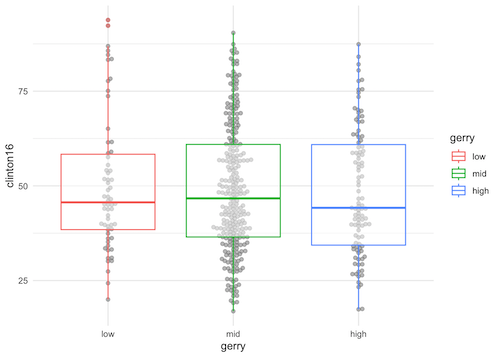
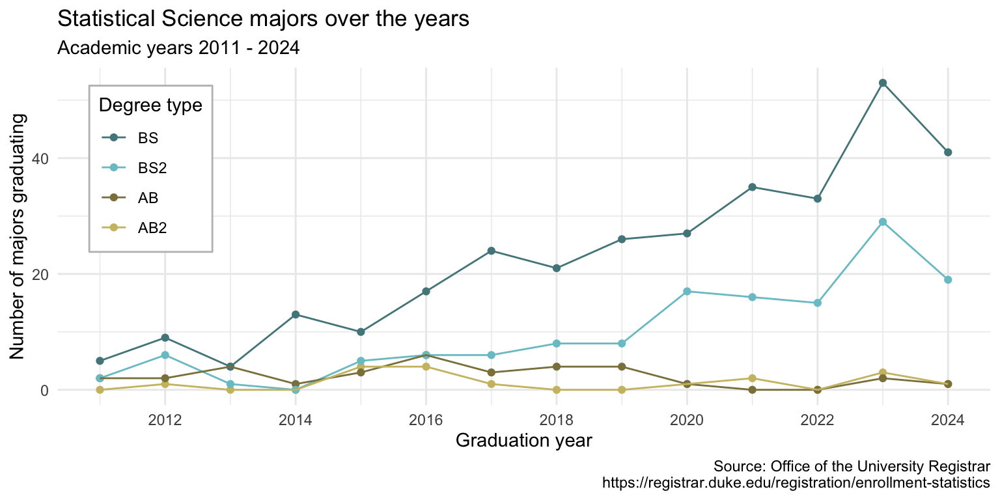

Tidying data
Lecture 6
Dr. Mine Çetinkaya-Rundel
Duke University
STA 199 - Fall 2024
September 17, 2024
Warm-up
While you wait…
Prepare for today’s application exercise: ae-06-majors-tidy
Go to your
aeproject in RStudio.Make sure all of your changes up to this point are committed and pushed, i.e., there’s nothing left in your Git pane.
Click Pull to get today’s application exercise file: ae-06-majors-tidy.qmd.
Wait till the you’re prompted to work on the application exercise during class before editing the file.
Recap: layering geoms
Update the following code to create the visualization on the right.

Recap: logical operators
Generally useful in a filter() but will come up in various other places as well…
| operator | definition |
|---|---|
< |
is less than? |
<= |
is less than or equal to? |
> |
is greater than? |
>= |
is greater than or equal to? |
== |
is exactly equal to? |
!= |
is not equal to? |
Recap: logical operators (cont.)
Generally useful in a filter() but will come up in various other places as well…
| operator | definition |
|---|---|
x & y |
is x AND y? |
x \| y |
is x OR y? |
is.na(x) |
is x NA? |
!is.na(x) |
is x not NA? |
x %in% y |
is x in y? |
!(x %in% y) |
is x not in y? |
!x |
is not x? (only makes sense if x is TRUE or FALSE) |
Recap: assignment
Let’s make a tiny data frame to use as an example:
Recap: assignment
Suppose you run the following and then you inspect df, will the x variable has values 1, 2, 3, 4, 5 or 2, 4, 6, 8, 10?
Do something and show me
Recap: assignment
Suppose you run the following and then you inspect df, will the x variable has values 1, 2, 3, 4, 5 or 2, 4, 6, 8, 10?
Do something and save result
Recap: assignment
Do something, save result, overwriting original
Recap: assignment
Do something, save result, overwriting original when you shouldn’t
Recap: assignment
Do something, save result, overwriting original
data frame
Data tidying
Tidy data
“Tidy datasets are easy to manipulate, model and visualise, and have a specific structure: each variable is a column, each observation is a row, and each type of observational unit is a table.”
Tidy Data, https://vita.had.co.nz/papers/tidy-data.pdf
Note: “easy to manipulate” = “straightforward to manipulate”
Goal
Visualize StatSci majors over the years!
Data
Data
# A tibble: 4 × 15
degree `2011` `2012` `2013` `2014` `2015` `2016` `2017` `2018`
<chr> <dbl> <dbl> <dbl> <dbl> <dbl> <dbl> <dbl> <dbl>
1 Statistical… NA 1 NA NA 4 4 1 NA
2 Statistical… 2 2 4 1 3 6 3 4
3 Statistical… 2 6 1 NA 5 6 6 8
4 Statistical… 5 9 4 13 10 17 24 21
# ℹ 6 more variables: `2019` <dbl>, `2020` <dbl>, `2021` <dbl>,
# `2022` <dbl>, `2023` <dbl>, `2024` <dbl>The first column (variable) is the
degree, and there are 4 possible degrees: BS (Bachelor of Science), BS2 (Bachelor of Science, 2nd major), AB (Bachelor of Arts), AB2 (Bachelor of Arts, 2nd major).The remaining columns show the number of students graduating with that major in a given academic year from 2011 to 2024.
Let’s plan!
Review the goal plot and sketch the data frame needed to make the plot. Determine rows and columns of the data frame. Hint: Data need to be in columns to map to aesthetic elements of the plot.
Pivot
pivot_longer()
Pivot the statsci data frame longer such that each row represents a degree type / year combination and year and number of graduates for that year are columns in the data frame.
year
What is the type of the year variable? Why? What should it be?
It’s a character (chr) variable since the information came from the columns of the original data frame and R cannot know that these character strings represent years. The variable type should be numeric.
pivot_longer() again
Start over with pivoting, and this time also make sure year is a numerical variable in the resulting data frame.
NA counts
What does an NA mean in this context? Hint: The data come from the university registrar, and they have records on every single graduates, there shouldn’t be anything “unknown” to them about who graduated when.
NAs should actually be 0s.
Clean-up
Add on to your pipeline that you started with pivoting and convert NAs in n to 0s.
More clean-up
In our plot the degree types are BS, BS2, AB, and AB2. This information is in our dataset, in the degree column, but this column also has additional characters we don’t need. Create a new column called degree_type with levels BS, BS2, AB, and AB2 (in this order) based on degree. Do this by adding on to your pipeline from earlier.
Finish
Now that you have your data pivoting and cleaning pipeline figured out, save the resulting data frame as statsci_longer.
Application exercise
ae-06-majors-tidy
Go to your ae project in RStudio.
If you haven’t yet done so, make sure all of your changes up to this point are committed and pushed, i.e., there’s nothing left in your Git pane.
If you haven’t yet done so, click Pull to get today’s application exercise file: ae-06-majors-tidy.qmd.
Work through the application exercise in class, and render, commit, and push your edits by the end of class.
Recap: pivoting
- Data sets can’t be labeled as wide or long but they can be made wider or longer for a certain analysis that requires a certain format
- When pivoting longer, variable names that turn into values are characters by default. If you need them to be in another format, you need to explicitly make that transformation, which you can do so within the
pivot_longer()function. - You can tweak a plot forever, but at some point the tweaks are likely not very productive. However, you should always be critical of defaults (however pretty they might be) and see if you can improve the plot to better portray your data / results / what you want to communicate.